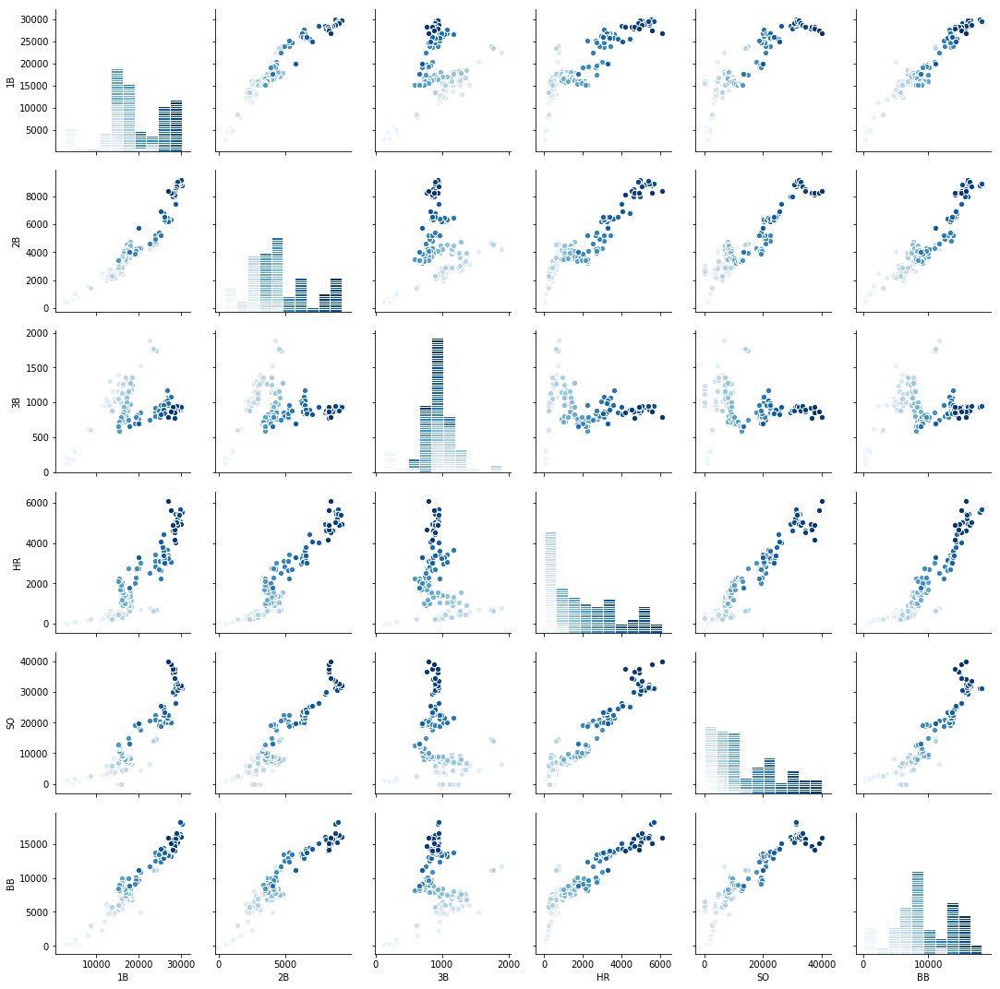
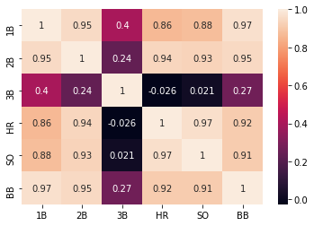
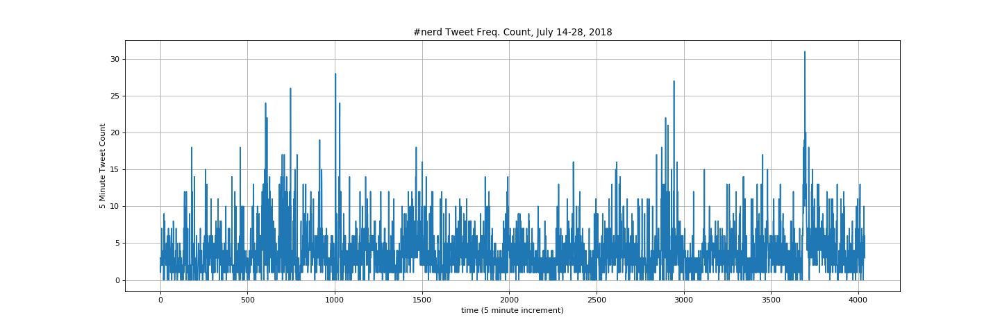

Working with large datasets using Python, Pandas, Matplotlib, and other data science tools.
For This Lesson You Will Need...
This lesson is supported by the content at the following Github repository:
https://github.com/jsale/data_science_with_python
Seaborn is a powerful data science visualization library based on matplotlib which offers a higher-level interface supporting a wide range of tools to create compelling, informative data visualizations. In this example, we will use a scatterplot matrix for what Seaborn refers to as a ‘PairGrid’ to visualize correlations between pairs of batting statistics over time by year.
First, we will define some variables for
batting_by_year = batting.groupby('yearID').sum().reset_index()
hit_vars = ['1B', '2B', '3B', 'HR', 'SO', 'BB']Now lets generate a scatterplot matrix so we can easily compare pairs of variables for all batting data.
g = sns.PairGrid(batting_by_year, vars=hit_vars, hue='yearID', palette='Blues')
g = g.map_diag(plt.hist, edgecolor="w")
g = g.map_offdiag(plt.scatter, edgecolor="w", s=40)This process is computationally intensive and may require some time for the plot to be generated. It should resemble the image below:

Next, let's generate a heat map of hitting statistics to get an idea of how batting stats are correlated with eachother.
sns.heatmap(batting_by_year[hit_vars].corr(), annot=True)The resulting heat map should resemble the image shown below:

You are probably already familiar with the Twitter social network. Twitter is a network built on a messaging system which allows people to send and receive messages consisting of fewer than 280 characters (and attached images) and other limited types of metadata. It has been used effectively as a near real-time communications tool in numerous global social events. Perhaps its greatest strength is that Twitter also provides an API which allows anyone to collect large amounts of data and perform a wide range of analyses to better understand these networks. This strength can also be a weakness, introducing vulnerabilities to ‘bots’ or ‘state-backed’ accounts which are used to spread disinformation in critical ways.
In these lessons, you will perform graph network analysis using networkx, and you will learn how to export to other graph network analysis and visualization applications such as Gephi, Neo4j, and GraphX.
Next, we will perform basic analysis by counting how many tweets occur in 5 minute epochs over the course of two weeks. Let’s get started by reading in data from our dataset collected on the #nerd, converting the tweet creation date to a Pandas dataframe, and performing a frequency count on the data using the Pandas ‘groupby’ function to get an overall sense of the temporal distribution of the tweets. Here is the Jupyter Notebook we will be using for this:
https://drive.google.com/open?id=17RhDiAHCFRM8oAhT1TiswSZzatMIss1y
Below is a plot of the resulting tweet frequency distribution using matplotlib.

We can clearly see a daily cycle of increasing and decreasing activity over the two-week period.
We also see that there is never very much activity at any one time. The most tweets we observe in a 5-minute period are ~30 tweets near the end of the time series. It is not uncommon to see that many tweets in a single second for some of the more active hashtags. Twitter sets a limit of 50 tweets per second for its Streaming API and it will send a JSON object with a ‘limit reached’ warning which must be accounted for in your filtering prior to analysis.
Extending this exercise a bit further, it may be useful to create an ordered list of the most frequently retweeted tweets in the dataset in order to get a better idea of the general nature of tweet content which might be considered typical of the #nerd hashtag.
To do this, we simply use the pandas groupby function and group by the tweet date/time stamp using the tweet ‘created_at’ parameter.
Copyright © 2019 XSEDE